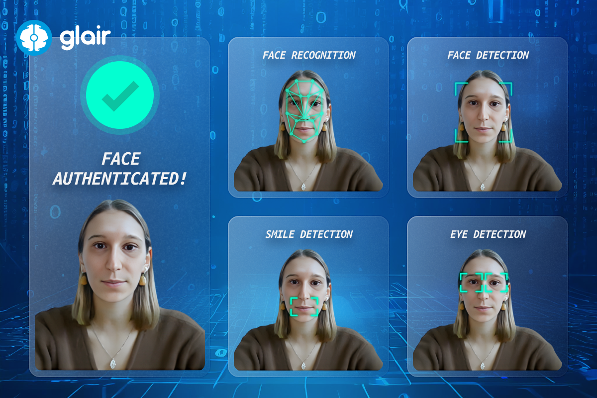

Critical Discussion

Deepfake AI is a double-edged sword. While it offers significant advancements in fields such as entertainment and education, it also poses risks:
- Ethical Concerns: Deepfakes can be used for malicious purposes, such as spreading misinformation or creating non-consensual explicit content.
- Political Concerns: Deepfake technology can be weaponized to spread misinformation, manipulate voter perceptions, and disrupt democratic processes.
- Social Concerns: People may become increasingly uncertain about the authenticity of online media, and privacy is threatened as personal images and voices can be replicated without consent.
- Trust Erosion: The proliferation of deepfakes can undermine public trust in media and institutions.
- Regulation Challenges: Governments and platforms struggle to keep up with the rapid advancements in deepfake technology.
Addressing the Risks
Several strategies are being developed to mitigate these risks:
- AI-Driven Detection: Companies are investing in tools to identify synthetic media using watermarking and forensic AI methods.
- Public Awareness Campaigns: Educating users on recognizing deepfakes can limit their impact.
- Collaborative Policies: Governments, technology companies, and researchers need to work together to create regulations and guidelines for the ethical use of deepfake technology.
Emerging Solutions
To combat misuse, advancements in deepfake detection techniques have been introduced. AI-based tools can analyze video artifacts, inconsistencies in lighting, and unnatural facial movements to detect deepfakes with increasing accuracy. Platforms like Facebook and YouTube are adopting these tools to monitor content effectively.
Global Impacts
Countries worldwide are recognizing the dangers of deepfakes. For instance, the European Union's AI Act proposes regulations to manage the use of synthetic media. In the U.S., discussions on amending laws to penalize the non-consensual use of personal likenesses are ongoing. These initiatives represent early steps toward a globally coordinated response to deepfake challenges.